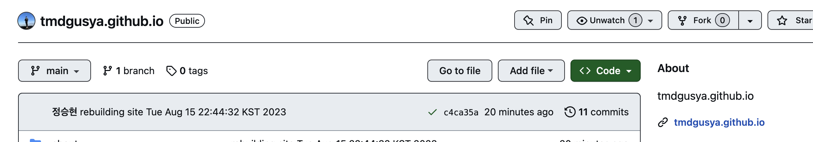
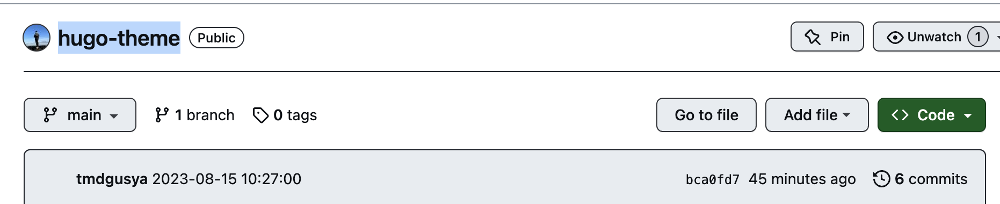
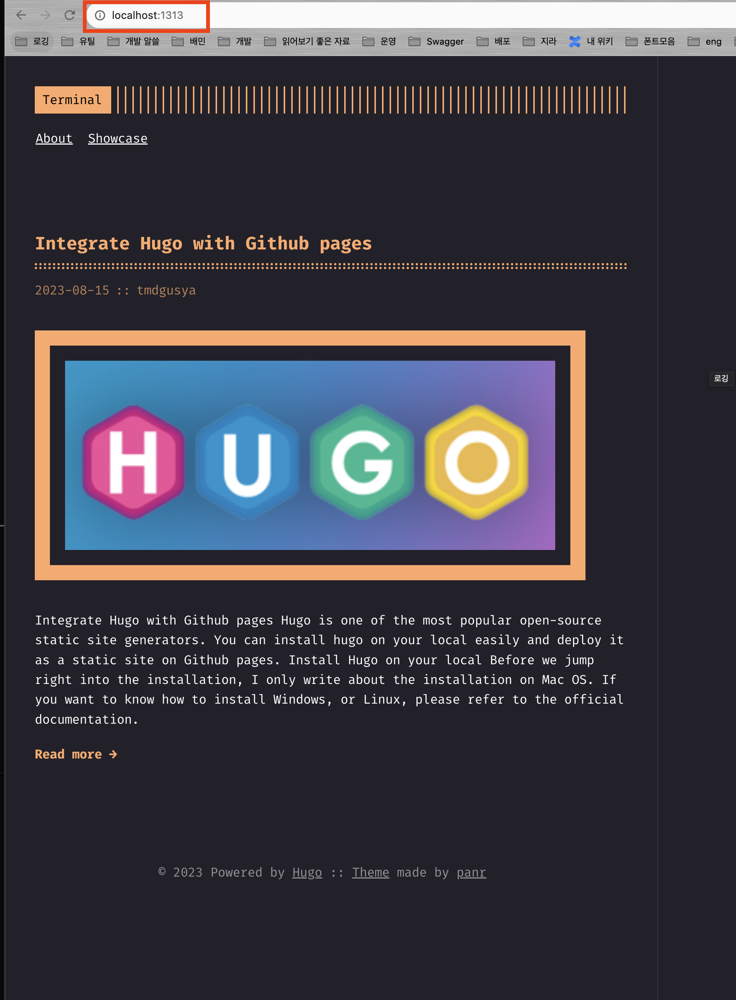
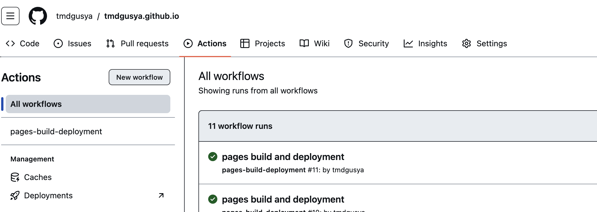
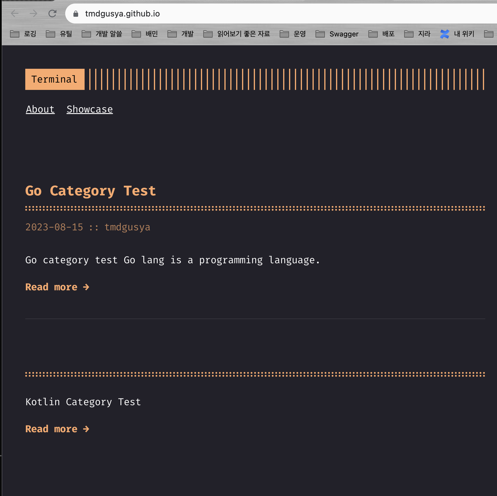

Make Personal Blog with Hugo and Github pages
Integrate Hugo with Github pages⌗
Hugo is one of the most popular open-source static site generators. You can install hugo on your local easily and deploy it as a static site on Github pages.
Install Hugo on your local⌗
Before we jump right into the installation, I only write about the installation on Mac OS. If you want to know how to install Windows, or Linux, please refer to the official documentation.
brew install hugo
If you have finished installing hugo, move on to the next step.
Make a deploy repository on Github⌗
We need to make two repositories on Github. One is for the source code of the blog, and the other is for the static site. So, we need to use submodule to manage the two repositories.
One’s name should be ‘username.github.io’ to indicate that it is a Github pages repository. The other’s name can be anything you want. Make a repository like the one below.

The repository above is used to deploy the static site. So, You don’t need to write anything in the repository.
Make a blog repository on Github⌗
This repository above is used to manage posts of the blog. So, you need to write a post in this repository. I’ll make a blog repository named ‘hugo-theme’. Anything is fine.

All right! We made two repositories. Let’s move on to the next step.
Make hugo blog directory⌗
In this step, we are going to make a hugo blog directory. Follow the steps below.
-
Move to the directory where you want to make a blog directory.
-
Move to the directory you made and execute the following command.
hugo new site <your blog name> # I made a directory named 'blog' and executed the command below. # hugo new site blog -
Move to
blogdirectory.cd blog -
If you want to apply theme, execute the following command. In this tutorial, I’ll use hugo-theme-terminal. If you want to use another theme, please refer to this. You can easily find how to apply a theme on your hugo.
git init git submodule add -f https://github.com/panr/hugo-theme-terminal.git themes/terminal -
Copy the configuration file from the web-site If you have to
- If you want to use hugo-theme-terminal, you can copy configure file from here.
-
Test it locally.
# hugo server -t {theme_name} (You must follow the rule which is written in the theme's README.md) hugo server -t terminal -
Go to
http://localhost:1313and check it.
Connect blog repository as a submodule⌗
Before we connect the blog repository as a submodule, there is one thing you have to know, which is Build results of hugo are being packed in public directory. So, we need to connect blog repository as a submodule in public directory.
-
Connect blog repository as a submodule. (You have to replace the link below with your blog repository link)
git submodule add -b main https://github.com/yours/yours.github.io.git public -
Build hugo blog.
hugo -t terminal -
Move to
publicdirectory and push it.cd public git add . git commit -m "Initial commit" git push origin main -
Go to your repository and check the
ActionsMenu. You can see the build result.
-
Go to your blog site! You can see the result.

Make a shell for auto-deploy⌗
If you want to deploy your blog automatically, you can use shell script. I’ll show you how to make a shell script for auto-deploy.
#!/bin/bash
# 1. Build the project using hugo
hugo -t terminal
# 2. Go To Public folder
cd public
# 3. Add changes to git.
git add .
# 4. Commit changes.
msg="rebuilding site $(date)"
# 5. Push source and build repos.
git commit -m "$msg"
git push origin main
if [ $# -eq 1 ]
then msg="$1"
fi
Conclusion⌗
In this tutorial, I showed you how to integrate hugo with Github pages. If you have any questions, please leave a comment below. Thank you for reading my post. Have a nice day!